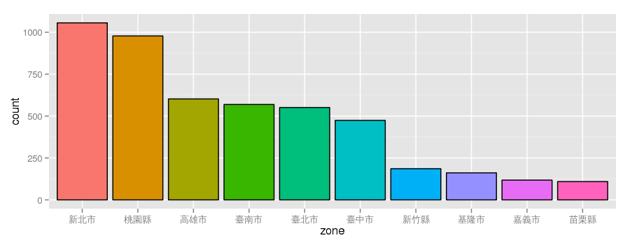
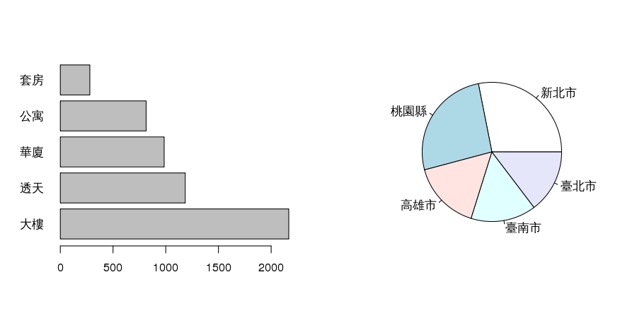
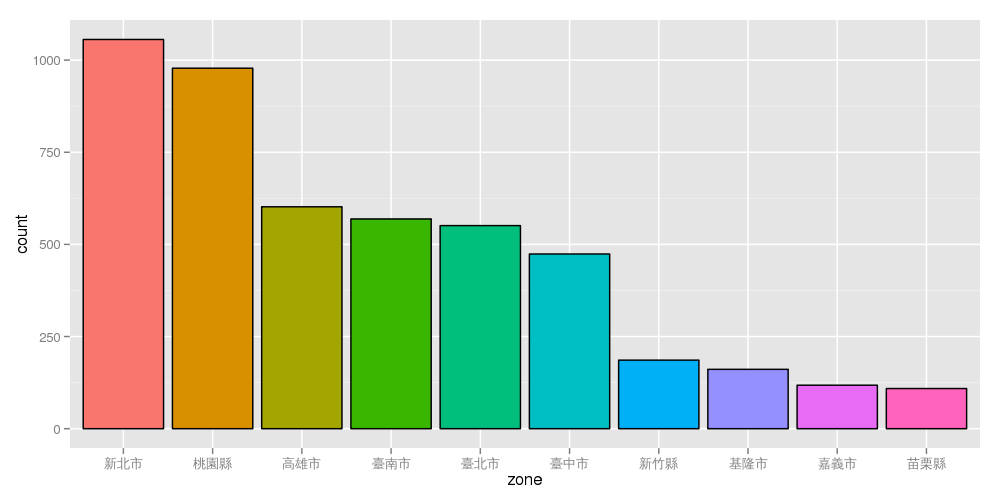
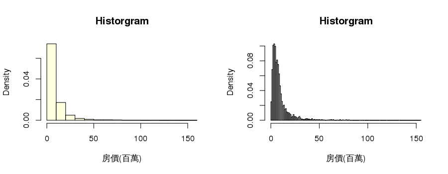
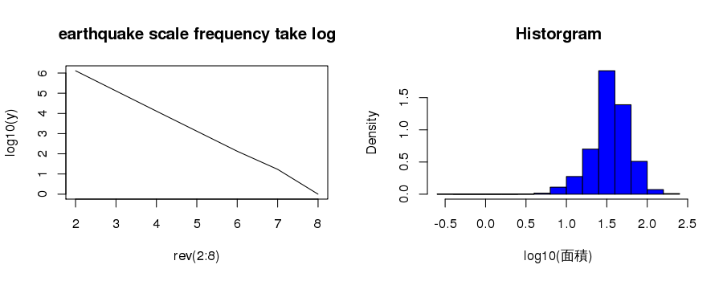
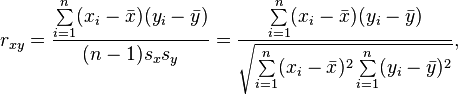
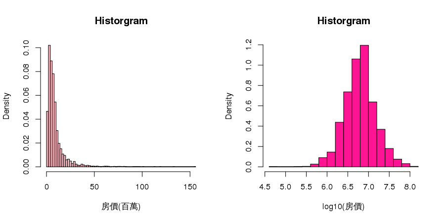
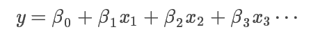
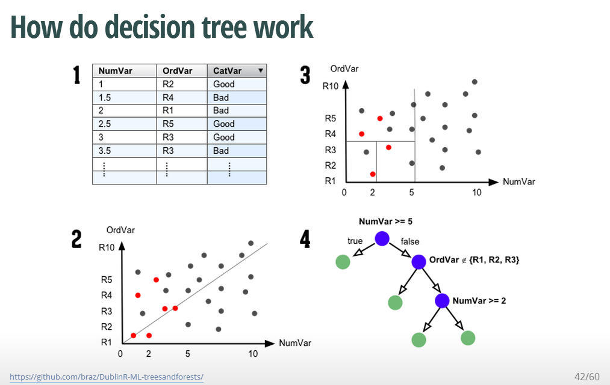

Data analysis with R
Sunday, Aug 31, 2014
George & Johnson
Purpose
趙藤雄被羈押

合適購屋站
- 充斥一堆房價資訊，但每個家庭也都有各自的喜好條件
- simple model: 可以指定理想房屋型態、條件，可以提供你參考的房價
- Data source：不動產實價登錄資料 ( ~ 2014年5月16日)
- Predictor variables : 建物面積、所屬縣市、屋齡、行政區域、建物型態
- 建物型態: 華廈(10層含以下有電梯)、套房(1房1廳1衛)、公寓(5樓含以下無電梯)、大樓(11層含以上有電梯)

Exploratory
Data Appearance
library('DSC2014Tutorial')
dat1 <- readRDS(DA_file("estate_linux.rds"))
nrow(dat1)
[1] 5431
# random sampling
dat1[sample(1:nrow(dat1),6),]
行政區 縣市 型態 房價 面積 屋齡 車位 管理
3779 臺南市東區 臺南市 公寓 1800000 22.7 34 無車位 有管理
1261 臺北市文山區 臺北市 大樓 22000000 38.0 2 有車位 有管理
777 臺北市南港區 臺北市 套房 11400000 16.9 5 無車位 有管理
6794 新北市淡水區 新北市 套房 2200000 11.0 7 無車位 有管理
4601 臺南市北區 臺南市 華廈 4650000 43.8 19 有車位 有管理
1798 臺中市西屯區 臺中市 大樓 8750000 25.1 2 有車位 有管理
dat1[sample(1:nrow(dat1),18),]
行政區 縣市 型態 房價 面積 屋齡 車位 管理
8783 新北市三重區 新北市 公寓 9750000 35.94 30 無車位 無管理
873 臺北市士林區 臺北市 公寓 20000000 36.20 31 無車位 無管理
7631 新北市三峽區 新北市 套房 2760000 11.69 19 無車位 有管理
9235 宜蘭縣蘇澳鎮 宜蘭縣 透天 7300000 69.30 0 無車位 無管理
5238 高雄市大社區 高雄市 透天 7650000 60.88 23 無車位 無管理
11855 嘉義市嘉義市 嘉義市 套房 700000 15.36 21 無車位 有管理
6177 高雄市左營區 高雄市 套房 4420000 23.95 16 有車位 無管理
4088 臺南市中西區 臺南市 華廈 750000 9.63 23 無車位 有管理
2784 臺中市南屯區 臺中市 大樓 16000000 88.31 20 有車位 有管理
1357 臺北市南港區 臺北市 大樓 63500000 87.36 0 有車位 有管理
5212 高雄市大寮區 高雄市 大樓 1720000 22.54 18 無車位 有管理
12037 新竹縣竹北市 新竹縣 大樓 18600000 86.09 1 有車位 有管理
166 臺北市松山區 臺北市 公寓 18300000 28.16 29 無車位 無管理
9233 宜蘭縣蘇澳鎮 宜蘭縣 透天 6300000 59.02 0 無車位 無管理
1739 臺中市西屯區 臺中市 套房 2700000 14.79 19 無車位 有管理
3910 臺南市永康區 臺南市 透天 4650000 33.73 25 無車位 無管理
13601 彰化縣彰化市 彰化縣 華廈 3900000 36.10 20 無車位 無管理
8043 新北市三重區 新北市 華廈 9100000 35.14 22 無車位 有管理
Description
summary(dat1)
行政區 縣市 型態 房價 面積 屋齡
桃園縣桃園市: 344 新北市 :1056 公寓: 814 Min. :5.03e+04 Min. : 0.3 Min. : 0.0
新北市淡水區: 219 桃園縣 : 978 大樓:2167 1st Qu.:3.55e+06 1st Qu.: 26.2 1st Qu.: 4.0
臺中市西屯區: 160 高雄市 : 602 套房: 280 Median :6.30e+06 Median : 35.7 Median :18.0
桃園縣楊梅市: 146 臺南市 : 569 華廈: 985 Mean :9.22e+06 Mean : 39.7 Mean :16.9
臺北市文山區: 144 臺北市 : 551 透天:1185 3rd Qu.:1.03e+07 3rd Qu.: 48.8 3rd Qu.:25.0
桃園縣中壢市: 137 臺中市 : 474 Max. :1.55e+08 Max. :232.8 Max. :74.0
(Other) :4281 (Other):1201
車位 管理
有車位:2020 有管理:3140
無車位:3411 無管理:2291
Tabulating
# tabulating
sort(table(dat1[,1]),decreasing = TRUE)[1:5]
桃園縣桃園市 新北市淡水區 臺中市西屯區 桃園縣楊梅市 臺北市文山區
344 219 160 146 144
Formula & Pivot table
- $y \sim x$
# pivotal table
library(reshape2);
dcast(data=dat1,formula=型態 ~ ., fun.aggregate=mean,value.var="房價")
型態 .
1 公寓 7007017
2 大樓 12241661
3 套房 3564414
4 華廈 7625996
5 透天 7863983
It's your turn 1
- 試練習各縣市在不同型態的房屋數量，如何操作?
library(reshape2)
dcast(dat1,型態 ~ ., fun.aggregate=mean,value.var="房價")
- Hint: cast + table
# Pivot table (Ans1)
library(reshape)
cast(data=dat1,formula=縣市 ~ ., fun.aggregate=table,value="型態")
縣市 公寓 大樓 套房 華廈 透天
1 南投縣 2 3 1 5 29
2 嘉義市 9 33 5 24 47
3 嘉義縣 3 1 0 2 22
4 基隆市 84 33 10 27 7
5 宜蘭縣 11 8 16 34 35
6 屏東縣 9 4 5 12 77
7 彰化縣 8 5 1 15 64
8 新北市 288 493 75 166 34
9 新竹市 12 18 4 21 4
10 新竹縣 4 109 0 38 35
11 桃園縣 73 596 29 181 99
12 澎湖縣 0 0 0 0 1
13 臺中市 41 216 51 79 87
14 臺北市 146 234 47 114 10
15 臺南市 43 104 16 108 298
16 臺東縣 3 0 1 3 20
17 花蓮縣 12 5 5 28 55
18 苗栗縣 9 8 0 49 43
19 金門縣 0 0 0 0 1
20 雲林縣 0 4 0 12 46
21 高雄市 57 293 14 67 171
#dcast(data=dat1,formula=縣市 ~ ., fun.aggregate=table,value.var="型態")
Graphic is more intutive
par(mfrow=c(1,2))
barplot(sort(table(dat1$縣市),decreasing=TRUE)[1:10],las=1,horiz=TRUE)
pie(sort(table(dat1$型態),decreasing=TRUE))

It's your turn 2
par(mfrow=c(1,2))
barplot(sort(table(dat1$縣市),decreasing=TRUE)[1:10],las=1,horiz=TRUE)
pie(sort(table(dat1$型態),decreasing=TRUE))
- 1. 按型態的barplot是?
- 2. 前五大縣市的pie plot?
# Barplot & Pie plot (Ans2)
par(mfrow=c(1,2))
barplot(sort(table(dat1$型態),decreasing=TRUE),las=1,horiz=TRUE)
pie(sort(table(dat1$縣市),decreasing=TRUE)[1:5])

ggplot (Data Visualization)
library(ggplot2);count <- sort(table(dat1$縣市),decreasing=TRUE)[1:10]
zone <- factor(names(count),levels=names(count),ordered=TRUE)
df <- data.frame(count, zone)
ggplot(data=df, aes(x=zone,y=count,fill=zone)) +
geom_bar(colour="black",stat="identity") + guides(fill=FALSE)

the shaple of data:Histogram -1
par(mfrow=c(1,2))
hist(dat1$面積,breaks=5,col="lightblue",prob=TRUE,xlab="面積",main="Historgram")
hist(dat1$面積,breaks=100,col="lightgreen",prob=TRUE,xlab="面積",main="Historgram")

becareful break argument : Histogram-2

Histogram -3
par(mfrow=c(1,2))
hist(dat1$房價/10^6,breaks=20,col="lightyellow",prob=TRUE,xlab="房價(百萬)",main="Historgram")
hist(dat1$房價/10^6,breaks=200,col="lightgray",prob=TRUE,xlab="房價(百萬)",main="Historgram")

Log transformation for ratio data -1
- what kind of data: 右偏，如: 芮氏規模地震、分貝、家庭年收入、成本、雨量。
- even more: 恐怖攻擊造成死亡人數，地震規模每年發生次數。

Log transformation for ratio data -2
par(mfrow=c(1,2))
plot(rev(2:8),log10(frequency),type="l",main="earthquake scale frequency take log")
hist(log10(dat1$面積),breaks=20,col="blue",prob=TRUE,xlab="log10(面積)",main="Historgram")

It's your turn 3
hist(dat1$面積,breaks=100,col="lightgreen",prob=TRUE,xlab="面積",main="Historgram")
hist(log10(dat1$面積),breaks=5,col="blue",prob=TRUE,xlab="log10(面積)",main="Historgram")
- 房價(單位百萬)直方圖, log房價(單位百萬)直方圖
- HINT: 房價單位百萬，寬度調小
# Histogram (Ans3)
par(mfrow=c(1,2))
hist(dat1$房價/10^6,breaks=100,col="lightpink",prob=TRUE,xlab="房價(百萬)",main="Historgram")
hist(log10(dat1$房價),breaks=20,col="deeppink",prob=TRUE,xlab="log10(房價)",main="Historgram")
descriptive statistics : Boxplot
| median : 中位數 | IQR : interquantile range |
|---|---|
| range(Q1-1.5IQR,Q3+1.5IQR) | outlier |
boxplot(面積~型態,data=subset(dat1,縣市=="臺北市"),ylab="面積(坪)",main="面積")

It's your turn 4
- 請繪製有五都
c("臺北市","新北市","臺中市","高雄市","臺南市")透天 log10(房價) 和套房 log10(房價)的boxplot 各一張
boxplot(面積~型態,data=subset(dat1,縣市=="臺北市"),ylab="面積(坪)",main="面積")
- HINT:
dat2 <- dat1[dat1$縣市 %in% c("臺北市","臺中市","新北市","臺南市","高雄市") ,]
dat2$縣市 <- factor(dat2$縣市,levels=c("臺北市","臺中市","新北市","臺南市","高雄市"))
# Boxplot (Ans4)
dat2 <- dat1[dat1$縣市 %in% c("臺北市","臺中市","新北市","臺南市","高雄市") ,]
dat2$縣市 <- factor(dat2$縣市,levels=c("臺北市","臺中市","新北市","臺南市","高雄市"))
boxplot(log10(房價)~縣市,data=subset(dat2,型態=="透天"),las=2,ylab="log10(房價)",main="透天")
boxplot(log10(房價)~縣市,data=subset(dat2,型態=="套房"),las=2,ylab="log10(房價)",main="套房")
Modeling method: Regression
Correlation Coefficient
x <- dat1$面積
y <- dat1$房價/10^4
c(cor(x,y),cor(log10(x),log10(y)))
[1] 0.544 0.613
Correlation coefficient by wiki

what do you see ?


Be careful to use numeber

first step : Scatter plot
par(mfrow=c(1,2))
plot(dat1$面積,dat1$房價/10^4,xlab="面積(坪)",ylab="房價(萬元)")
plot(dat1$面積,dat1$房價/10^4,xlab="log面積(坪)",ylab="log房價(萬元)",log="xy")

Discovery pattern
- 九大行星半徑(R,million_km)與週期(T,day)關係圖


Simple regression
plot(x,y,xlab="面積(坪)",ylab="房價(萬元)",log="xy")
fit <- lm(log10(y)~log10(x))
abline(fit,col=2,lwd=2)

summary(fit) #all data simple regression: log10(房價) ~ log10(面積)
Call:
lm(formula = log10(y) ~ log10(x))
Residuals:
Min 1Q Median 3Q Max
-1.5112 -0.1988 -0.0222 0.1884 1.3239
Coefficients:
Estimate Std. Error t value Pr(>|t|)
(Intercept) 1.2479 0.0274 45.6 <2e-16 ***
log10(x) 1.0032 0.0176 57.1 <2e-16 ***
---
Signif. codes: 0 '***' 0.001 '**' 0.01 '*' 0.05 '.' 0.1 ' ' 1
Residual standard error: 0.3 on 5429 degrees of freedom
Multiple R-squared: 0.375, Adjusted R-squared: 0.375
F-statistic: 3.26e+03 on 1 and 5429 DF, p-value: <2e-16
It's your turn 5
x <- dat1$面積
y <- dat1$房價/10^4
c(cor(x,y),cor(log10(x),log10(y)))
plot(x,y,xlab="面積(坪)",ylab="房價(萬元)",log="xy")
fit <- lm(log10(y)~log10(x))
abline(fit,col=2,lwd=2)
- 試作 臺北市房價 簡單回歸模型
# Simple regression (Ans5)
dat3 <- dat1[dat1$縣市=="臺北市",]
x <- dat3$面積-y <- dat3$房價/10^4
plot(x,y,log="xy");fit<-lm(log10(y)~log10(x))
abline(fit,col=2)
legend("topleft",legend=round(summary(fit)$r.squared,4),title="r.squared")

Multiple regression - Variables
- $y$: response ,explained variable, dependent variable, predictand. 如: 房價、雨量
- $x$: predictor, independnet variable... 如: (面積,型態)、(溫度、風速、氣壓)

$$ 房價 \sim 面積 + 屋齡 + 建物型態 + 行政區 + ...$$
Multiple regression - Category variable
library(ggplot2)
dat4 <- dat1
names(dat4) <- c("zone","admin","type","price","area","age","parking","maintance")
qplot(area,price,data=dat4,log="xy") + geom_smooth(method="lm") + facet_grid(parking ~ maintance)

m11 <- lm(log10(房價)~log10(面積)+屋齡+型態+車位+管理, data=dat1)
summary(m11)
Call:
lm(formula = log10(房價) ~ log10(面積) + 屋齡 + 型態 +
車位 + 管理, data = dat1)
Residuals:
Min 1Q Median 3Q Max
-1.548 -0.187 -0.031 0.171 1.447
Coefficients:
Estimate Std. Error t value Pr(>|t|)
(Intercept) 5.525369 0.043638 126.62 < 2e-16 ***
log10(面積) 0.975900 0.022462 43.45 < 2e-16 ***
屋齡 -0.002676 0.000428 -6.26 4.2e-10 ***
型態大樓 -0.107572 0.018380 -5.85 5.1e-09 ***
型態套房 -0.081855 0.024657 -3.32 0.00091 ***
型態華廈 -0.185807 0.017072 -10.88 < 2e-16 ***
型態透天 -0.170611 0.014213 -12.00 < 2e-16 ***
車位無車位 -0.067019 0.011182 -5.99 2.2e-09 ***
管理無管理 -0.071261 0.013707 -5.20 2.1e-07 ***
---
Signif. codes: 0 '***' 0.001 '**' 0.01 '*' 0.05 '.' 0.1 ' ' 1
Residual standard error: 0.285 on 5422 degrees of freedom
Multiple R-squared: 0.438, Adjusted R-squared: 0.437
F-statistic: 527 on 8 and 5422 DF, p-value: <2e-16
m12 <- lm(log10(房價)~log10(面積)+屋齡+型態+車位+管理+行政區, data=dat1)
summary(m12)
Call:
lm(formula = log10(房價) ~ log10(面積) + 屋齡 + 型態 +
車位 + 管理 + 行政區, data = dat1)
Residuals:
Min 1Q Median 3Q Max
-1.2265 -0.0655 0.0029 0.0750 1.3362
Coefficients:
Estimate Std. Error t value Pr(>|t|)
(Intercept) 3.80487 0.14266 26.67 < 2e-16 ***
log10(面積) 0.93529 0.01178 79.43 < 2e-16 ***
屋齡 -0.00407 0.00024 -16.94 < 2e-16 ***
型態大樓 0.03355 0.00963 3.48 0.00050 ***
型態套房 -0.01507 0.01285 -1.17 0.24073
型態華廈 0.00673 0.00906 0.74 0.45727
型態透天 0.22132 0.00835 26.52 < 2e-16 ***
車位無車位 -0.04057 0.00583 -6.96 3.9e-12 ***
管理無管理 0.00899 0.00713 1.26 0.20742
行政區南投縣南投市 1.21450 0.14489 8.38 < 2e-16 ***
行政區南投縣名間鄉 1.10909 0.19932 5.56 2.8e-08 ***
行政區南投縣埔里鎮 1.26090 0.15421 8.18 3.6e-16 ***
行政區南投縣竹山鎮 1.07751 0.16255 6.63 3.7e-11 ***
行政區南投縣草屯鎮 1.30764 0.14766 8.86 < 2e-16 ***
行政區南投縣集集鎮 1.02479 0.17244 5.94 3.0e-09 ***
行政區南投縣魚池鄉 1.22478 0.19908 6.15 8.2e-10 ***
行政區嘉義市嘉義市 1.28298 0.14142 9.07 < 2e-16 ***
行政區嘉義縣中埔鄉 0.99521 0.19908 5.00 6.0e-07 ***
行政區嘉義縣大林鎮 1.21262 0.15430 7.86 4.7e-15 ***
行政區嘉義縣太保市 0.97852 0.16259 6.02 1.9e-09 ***
行政區嘉義縣布袋鎮 0.92141 0.17242 5.34 9.5e-08 ***
行政區嘉義縣朴子市 1.36749 0.17264 7.92 2.9e-15 ***
行政區嘉義縣梅山鄉 1.03431 0.19909 5.20 2.1e-07 ***
行政區嘉義縣民雄鄉 1.02963 0.14704 7.00 2.8e-12 ***
行政區嘉義縣水上鄉 1.01106 0.19911 5.08 4.0e-07 ***
行政區嘉義縣溪口鄉 1.11756 0.19909 5.61 2.1e-08 ***
行政區嘉義縣番路鄉 1.11389 0.19912 5.59 2.3e-08 ***
行政區基隆市七堵區 1.60727 0.14559 11.04 < 2e-16 ***
行政區基隆市中山區 1.36955 0.14624 9.36 < 2e-16 ***
行政區基隆市中正區 1.38544 0.14297 9.69 < 2e-16 ***
行政區基隆市仁愛區 1.51164 0.14667 10.31 < 2e-16 ***
行政區基隆市信義區 1.44002 0.14353 10.03 < 2e-16 ***
行政區基隆市安樂區 1.38243 0.14253 9.70 < 2e-16 ***
行政區基隆市暖暖區 1.38015 0.14501 9.52 < 2e-16 ***
行政區宜蘭縣五結鄉 1.34279 0.15210 8.83 < 2e-16 ***
行政區宜蘭縣冬山鄉 1.31905 0.16264 8.11 6.3e-16 ***
行政區宜蘭縣員山鄉 1.21346 0.15745 7.71 1.5e-14 ***
行政區宜蘭縣壯圍鄉 1.30586 0.19927 6.55 6.2e-11 ***
行政區宜蘭縣宜蘭市 1.47602 0.14333 10.30 < 2e-16 ***
行政區宜蘭縣礁溪鄉 1.55596 0.14424 10.79 < 2e-16 ***
行政區宜蘭縣羅東鎮 1.41966 0.14369 9.88 < 2e-16 ***
行政區宜蘭縣蘇澳鎮 1.12598 0.14614 7.70 1.6e-14 ***
行政區宜蘭縣頭城鎮 1.36602 0.16275 8.39 < 2e-16 ***
行政區屏東縣fa72埔鄉 0.73194 0.19926 3.67 0.00024 ***
行政區屏東縣九如鄉 1.19258 0.15213 7.84 5.5e-15 ***
行政區屏東縣內埔鄉 1.03291 0.15740 6.56 5.8e-11 ***
行政區屏東縣屏東巿 1.24661 0.14224 8.76 < 2e-16 ***
行政區屏東縣恆春鎮 1.37544 0.15741 8.74 < 2e-16 ***
行政區屏東縣新園鄉 0.99315 0.17242 5.76 8.9e-09 ***
行政區屏東縣東港鎮 1.15884 0.15206 7.62 3.0e-14 ***
行政區屏東縣枋寮鄉 0.96904 0.15206 6.37 2.0e-10 ***
行政區屏東縣潮州鎮 1.18399 0.14465 8.19 3.4e-16 ***
行政區屏東縣萬丹鄉 0.94360 0.16259 5.80 6.9e-09 ***
行政區屏東縣里港鄉 0.85990 0.19908 4.32 1.6e-05 ***
行政區屏東縣長治鄉 1.14673 0.15432 7.43 1.3e-13 ***
行政區屏東縣麟洛鄉 1.06494 0.17243 6.18 7.1e-10 ***
行政區彰化縣二林鎮 1.19743 0.15210 7.87 4.2e-15 ***
行政區彰化縣北斗鎮 1.24016 0.15207 8.16 4.3e-16 ***
行政區彰化縣和美鎮 1.29118 0.15206 8.49 < 2e-16 ***
行政區彰化縣員林鎮 1.30863 0.14542 9.00 < 2e-16 ***
行政區彰化縣埔心鄉 1.12881 0.19916 5.67 1.5e-08 ***
行政區彰化縣埤頭鄉 1.28798 0.19909 6.47 1.1e-10 ***
行政區彰化縣彰化市 1.40572 0.14307 9.83 < 2e-16 ***
行政區彰化縣永靖鄉 1.31682 0.16260 8.10 6.9e-16 ***
行政區彰化縣溪湖鎮 1.27766 0.15741 8.12 5.9e-16 ***
行政區彰化縣田中鎮 1.20625 0.15205 7.93 2.6e-15 ***
行政區彰化縣社頭鄉 1.18760 0.17242 6.89 6.3e-12 ***
行政區彰化縣福興鄉 1.35184 0.19923 6.79 1.3e-11 ***
行政區彰化縣秀水鄉 1.14820 0.19909 5.77 8.5e-09 ***
行政區彰化縣線西鄉 1.19819 0.19909 6.02 1.9e-09 ***
行政區彰化縣鹿港鎮 1.32037 0.14843 8.90 < 2e-16 ***
行政區新北市三峽區 1.74821 0.14277 12.25 < 2e-16 ***
行政區新北市三芝區 1.37910 0.15754 8.75 < 2e-16 ***
行政區新北市三重區 1.94138 0.14176 13.69 < 2e-16 ***
行政區新北市中和區 1.98671 0.14160 14.03 < 2e-16 ***
行政區新北市五股區 1.76207 0.14497 12.15 < 2e-16 ***
行政區新北市八里區 1.68688 0.14308 11.79 < 2e-16 ***
行政區新北市土城區 1.90037 0.14297 13.29 < 2e-16 ***
行政區新北市新店區 1.97959 0.14162 13.98 < 2e-16 ***
行政區新北市新莊區 1.88490 0.14174 13.30 < 2e-16 ***
行政區新北市板橋區 2.02355 0.14216 14.23 < 2e-16 ***
行政區新北市林口區 1.70345 0.14296 11.92 < 2e-16 ***
行政區新北市樹林區 1.73515 0.14279 12.15 < 2e-16 ***
行政區新北市永和區 2.08140 0.14266 14.59 < 2e-16 ***
行政區新北市汐止區 1.83000 0.14173 12.91 < 2e-16 ***
行政區新北市泰山區 1.77692 0.14524 12.23 < 2e-16 ***
行政區新北市淡水區 1.67418 0.14125 11.85 < 2e-16 ***
行政區新北市深坑區 1.85535 0.14945 12.41 < 2e-16 ***
行政區新北市蘆洲區 1.88835 0.14224 13.28 < 2e-16 ***
行政區新北市貢寮區 1.09638 0.17251 6.36 2.3e-10 ***
行政區新北市金山區 1.38695 0.19926 6.96 3.8e-12 ***
行政區新北市鶯歌區 1.60284 0.14946 10.72 < 2e-16 ***
行政區新竹市新竹市 1.60420 0.14208 11.29 < 2e-16 ***
行政區新竹縣北埔鄉 1.33200 0.19916 6.69 2.5e-11 ***
行政區新竹縣寶山鄉 1.29187 0.16264 7.94 2.4e-15 ***
行政區新竹縣新埔鎮 1.29452 0.19910 6.50 8.7e-11 ***
行政區新竹縣新豐鄉 1.45958 0.15743 9.27 < 2e-16 ***
行政區新竹縣湖口鄉 1.38228 0.15745 8.78 < 2e-16 ***
行政區新竹縣竹北市 1.58190 0.14146 11.18 < 2e-16 ***
行政區新竹縣竹東鎮 1.31600 0.14297 9.20 < 2e-16 ***
行政區新竹縣關西鎮 1.20839 0.15756 7.67 2.0e-14 ***
行政區桃園縣中壢市 1.53178 0.14137 10.84 < 2e-16 ***
行政區桃園縣八德市 1.52696 0.14161 10.78 < 2e-16 ***
行政區桃園縣大園鄉 1.58943 0.15218 10.44 < 2e-16 ***
行政區桃園縣大溪鎮 1.31441 0.14706 8.94 < 2e-16 ***
行政區桃園縣平鎮市 1.45393 0.14166 10.26 < 2e-16 ***
行政區桃園縣新屋鄉 1.43049 0.19920 7.18 7.9e-13 ***
行政區桃園縣桃園市 1.62606 0.14112 11.52 < 2e-16 ***
行政區桃園縣楊梅市 1.36884 0.14140 9.68 < 2e-16 ***
行政區桃園縣蘆竹鄉 1.66664 0.14163 11.77 < 2e-16 ***
行政區桃園縣觀音鄉 1.30851 0.15426 8.48 < 2e-16 ***
行政區桃園縣龍潭鄉 1.54280 0.17259 8.94 < 2e-16 ***
行政區桃園縣龜山鄉 1.64368 0.14302 11.49 < 2e-16 ***
行政區澎湖縣馬公市 1.28946 0.19909 6.48 1.0e-10 ***
行政區臺中市中區 1.17161 0.15758 7.44 1.2e-13 ***
行政區臺中市南區 1.47641 0.14265 10.35 < 2e-16 ***
行政區臺中市南屯區 1.62406 0.14175 11.46 < 2e-16 ***
行政區臺中市后里區 1.45256 0.19908 7.30 3.4e-13 ***
行政區臺中市外埔區 1.14455 0.19910 5.75 9.5e-09 ***
行政區臺中市大甲區 1.27951 0.15053 8.50 < 2e-16 ***
行政區臺中市大肚區 1.23964 0.19910 6.23 5.2e-10 ***
行政區臺中市大里區 1.36827 0.14767 9.27 < 2e-16 ***
行政區臺中市大雅區 1.48327 0.14769 10.04 < 2e-16 ***
行政區臺中市太平區 1.28724 0.15427 8.34 < 2e-16 ***
行政區臺中市新社區 0.67619 0.19922 3.39 0.00069 ***
行政區臺中市東勢區 1.11756 0.15426 7.24 5.0e-13 ***
行政區臺中市東區 1.38998 0.14775 9.41 < 2e-16 ***
行政區臺中市梧棲區 1.16874 0.15209 7.68 1.8e-14 ***
行政區臺中市沙鹿區 1.36666 0.14429 9.47 < 2e-16 ***
行政區臺中市清水區 1.26441 0.14935 8.47 < 2e-16 ***
行政區臺中市潭子區 1.43562 0.14366 9.99 < 2e-16 ***
行政區臺中市烏日區 1.44294 0.15742 9.17 < 2e-16 ***
行政區臺中市神岡區 1.32592 0.15430 8.59 < 2e-16 ***
行政區臺中市西區 1.55131 0.14257 10.88 < 2e-16 ***
行政區臺中市西屯區 1.60362 0.14134 11.35 < 2e-16 ***
行政區臺中市豐原區 1.52049 0.14431 10.54 < 2e-16 ***
行政區臺中市龍井區 1.16889 0.15757 7.42 1.4e-13 ***
行政區臺北市中山區 2.18641 0.14276 15.31 < 2e-16 ***
行政區臺北市中正區 2.22860 0.14525 15.34 < 2e-16 ***
行政區臺北市信義區 2.20067 0.14369 15.31 < 2e-16 ***
行政區臺北市內湖區 2.08775 0.14202 14.70 < 2e-16 ***
行政區臺北市北投區 2.06299 0.14240 14.49 < 2e-16 ***
行政區臺北市南港區 2.14743 0.14207 15.12 < 2e-16 ***
行政區臺北市士林區 2.10090 0.14208 14.79 < 2e-16 ***
行政區臺北市大同區 2.10301 0.14780 14.23 < 2e-16 ***
行政區臺北市大安區 2.35725 0.14286 16.50 < 2e-16 ***
行政區臺北市文山區 2.01239 0.14143 14.23 < 2e-16 ***
行政區臺北市松山區 2.19700 0.14318 15.34 < 2e-16 ***
行政區臺北市萬華區 2.02262 0.14528 13.92 < 2e-16 ***
行政區臺南市下營區 1.10963 0.19917 5.57 2.7e-08 ***
行政區臺南市中西區 1.41068 0.14517 9.72 < 2e-16 ***
行政區臺南市仁德區 1.30918 0.14382 9.10 < 2e-16 ***
行政區臺南市佳里區 1.16121 0.14544 7.98 1.7e-15 ***
行政區臺南市六甲區 1.03588 0.17242 6.01 2.0e-09 ***
行政區臺南市北區 1.34655 0.14263 9.44 < 2e-16 ***
行政區臺南市北門區 0.99019 0.17243 5.74 9.9e-09 ***
行政區臺南市南區 1.27876 0.14196 9.01 < 2e-16 ***
行政區臺南市善化區 1.21654 0.14937 8.14 4.7e-16 ***
行政區臺南市學甲區 0.99783 0.16257 6.14 9.0e-10 ***
行政區臺南市安南區 1.26885 0.14215 8.93 < 2e-16 ***
行政區臺南市安定區 1.15163 0.19910 5.78 7.7e-09 ***
行政區臺南市安平區 1.32628 0.14319 9.26 < 2e-16 ***
行政區臺南市官田區 0.98203 0.15426 6.37 2.1e-10 ***
行政區臺南市新化區 1.25457 0.17246 7.27 4.0e-13 ***
行政區臺南市新市區 1.27702 0.16258 7.85 4.8e-15 ***
行政區臺南市新營區 1.21209 0.14385 8.43 < 2e-16 ***
行政區臺南市東區 1.41559 0.14162 10.00 < 2e-16 ***
行政區臺南市柳營區 0.93406 0.16259 5.74 9.7e-09 ***
行政區臺南市楠西區 0.92615 0.19910 4.65 3.4e-06 ***
行政區臺南市歸仁區 1.26333 0.14298 8.84 < 2e-16 ***
行政區臺南市永康區 1.31159 0.14135 9.28 < 2e-16 ***
行政區臺南市白河區 1.24390 0.16259 7.65 2.4e-14 ***
行政區臺南市西港區 1.11577 0.15056 7.41 1.5e-13 ***
行政區臺南市關廟區 0.99513 0.17242 5.77 8.3e-09 ***
行政區臺南市鹽水區 0.98108 0.17257 5.69 1.4e-08 ***
行政區臺南市麻豆區 1.21891 0.15423 7.90 3.3e-15 ***
行政區臺東縣台東市 1.25913 0.14369 8.76 < 2e-16 ***
行政區臺東縣太麻里鄉 1.19121 0.19942 5.97 2.5e-09 ***
行政區臺東縣成功鎮 0.63540 0.19909 3.19 0.00142 **
行政區臺東縣鹿野鄉 1.03906 0.19908 5.22 1.9e-07 ***
行政區花蓮縣光復鄉 0.91894 0.17243 5.33 1.0e-07 ***
行政區花蓮縣吉安鄉 1.35874 0.14609 9.30 < 2e-16 ***
行政區花蓮縣壽豐鄉 1.27781 0.17251 7.41 1.5e-13 ***
行政區花蓮縣新城鄉 1.18262 0.15422 7.67 2.1e-14 ***
行政區花蓮縣玉里鎮 1.13782 0.15052 7.56 4.8e-14 ***
行政區花蓮縣花蓮市 1.40234 0.14178 9.89 < 2e-16 ***
行政區花蓮縣鳳林鎮 1.15810 0.17251 6.71 2.1e-11 ***
行政區苗栗縣公館鄉 1.21566 0.17245 7.05 2.0e-12 ***
行政區苗栗縣卓蘭鎮 1.21373 0.19909 6.10 1.2e-09 ***
行政區苗栗縣大湖鄉 1.14326 0.17243 6.63 3.7e-11 ***
行政區苗栗縣竹南鎮 1.38035 0.14415 9.58 < 2e-16 ***
行政區苗栗縣苑裡鎮 1.33164 0.17246 7.72 1.4e-14 ***
行政區苗栗縣苗栗市 1.24212 0.14575 8.52 < 2e-16 ***
行政區苗栗縣頭份鎮 1.41037 0.14206 9.93 < 2e-16 ***
行政區苗栗縣頭屋鄉 1.13281 0.15433 7.34 2.5e-13 ***
行政區金門縣金城鎮 1.36410 0.19908 6.85 8.1e-12 ***
行政區雲林縣元長鄉 0.77865 0.19909 3.91 9.3e-05 ***
行政區雲林縣北港鎮 1.20236 0.15209 7.91 3.2e-15 ***
行政區雲林縣古坑鄉 1.04791 0.19909 5.26 1.5e-07 ***
行政區雲林縣土庫鎮 1.14720 0.19917 5.76 8.9e-09 ***
行政區雲林縣斗六市 1.35226 0.14412 9.38 < 2e-16 ***
行政區雲林縣斗南鎮 1.12629 0.14934 7.54 5.4e-14 ***
行政區雲林縣東勢鄉 0.94042 0.19909 4.72 2.4e-06 ***
行政區雲林縣林內鄉 0.96092 0.17241 5.57 2.6e-08 ***
行政區雲林縣莿桐鄉 1.00360 0.17242 5.82 6.2e-09 ***
行政區雲林縣虎尾鎮 1.21436 0.14711 8.25 < 2e-16 ***
行政區雲林縣西螺鎮 1.14171 0.15052 7.59 3.9e-14 ***
行政區雲林縣麥寮鄉 1.23140 0.19929 6.18 6.9e-10 ***
行政區高雄市三民區 1.47642 0.14253 10.36 < 2e-16 ***
行政區高雄市仁武區 1.24945 0.14936 8.37 < 2e-16 ***
行政區高雄市前金區 1.55237 0.16277 9.54 < 2e-16 ***
行政區高雄市前鎮區 1.44309 0.14241 10.13 < 2e-16 ***
行政區高雄市大寮區 1.18670 0.14269 8.32 < 2e-16 ***
行政區高雄市大樹區 1.00413 0.15215 6.60 4.5e-11 ***
行政區高雄市大社區 1.18890 0.15428 7.71 1.5e-14 ***
行政區高雄市小港區 1.36885 0.14236 9.62 < 2e-16 ***
行政區高雄市岡山區 1.34773 0.14517 9.28 < 2e-16 ***
行政區高雄市左營區 1.53689 0.14183 10.84 < 2e-16 ***
行政區高雄市彌陀區 1.23260 0.19917 6.19 6.5e-10 ***
行政區高雄市新興區 1.35690 0.19936 6.81 1.1e-11 ***
行政區高雄市旗山區 1.22739 0.15739 7.80 7.5e-15 ***
行政區高雄市林園區 1.02068 0.14653 6.97 3.7e-12 ***
行政區高雄市梓官區 1.19208 0.19909 5.99 2.3e-09 ***
行政區高雄市楠梓區 1.40107 0.14173 9.89 < 2e-16 ***
行政區高雄市橋頭區 1.30978 0.17241 7.60 3.6e-14 ***
行政區高雄市湖內區 1.13532 0.14513 7.82 6.2e-15 ***
行政區高雄市燕巢區 1.25341 0.16258 7.71 1.5e-14 ***
行政區高雄市苓雅區 1.63185 0.14716 11.09 < 2e-16 ***
行政區高雄市茄萣區 0.98264 0.17248 5.70 1.3e-08 ***
行政區高雄市路竹區 1.22240 0.15742 7.77 9.8e-15 ***
行政區高雄市阿蓮區 1.18073 0.15741 7.50 7.4e-14 ***
行政區高雄市鳥松區 1.38566 0.14712 9.42 < 2e-16 ***
行政區高雄市鳳山區 1.37689 0.14152 9.73 < 2e-16 ***
行政區高雄市鹽埕區 1.56994 0.17256 9.10 < 2e-16 ***
行政區高雄市鼓山區 1.67786 0.14228 11.79 < 2e-16 ***
---
Signif. codes: 0 '***' 0.001 '**' 0.01 '*' 0.05 '.' 0.1 ' ' 1
Residual standard error: 0.141 on 5196 degrees of freedom
Multiple R-squared: 0.868, Adjusted R-squared: 0.862
F-statistic: 146 on 234 and 5196 DF, p-value: <2e-16
It's your turn 6
m11 <- lm(log10(房價)~log10(面積)+屋齡+型態+車位+管理, data=dat1);summary(m11)
m12 <- lm(log10(房價)~log10(面積)+屋齡+型態+車位+管理+行政區, data=dat1)
- 試建立臺北市 multiple regression(predictor: +行政區)，並找出R.squared
# Multiple regression & category variable-1 (Ans6)-1
m21 <- lm(log10(房價)~log10(面積)+屋齡+型態+車位+管理, data=dat3)
m22 <- lm(log10(房價)~log10(面積)+屋齡+型態+車位+管理+行政區, data=dat3)
# R-squared, 越趨近1模型解釋能力越好
data.frame("model.taiwan.1"=summary(m11)$r.sq, "model.taiwan.all"=summary(m12)$r.sq,
"model.taipei.1"=summary(m21)$r.sq, "model.taipei.all"=summary(m22)$r.sq)
model.taiwan.1 model.taiwan.all model.taipei.1 model.taipei.all
1 0.438 0.868 0.746 0.805
summary(m21) #台北市資料 multiple regression: log10(房價) ~ log10(面積) + 屋齡 + 型態 + 車位 + 管理
Call:
lm(formula = log10(房價) ~ log10(面積) + 屋齡 + 型態 +
車位 + 管理, data = dat3)
Residuals:
Min 1Q Median 3Q Max
-0.7310 -0.0657 -0.0034 0.0928 0.6235
Coefficients:
Estimate Std. Error t value Pr(>|t|)
(Intercept) 5.538797 0.072393 76.51 < 2e-16 ***
log10(面積) 1.115329 0.039894 27.96 < 2e-16 ***
屋齡 -0.002501 0.000888 -2.82 0.00503 **
型態大樓 0.058973 0.030865 1.91 0.05658 .
型態套房 0.118842 0.037591 3.16 0.00166 **
型態華廈 0.095532 0.026585 3.59 0.00036 ***
型態透天 -0.010588 0.056057 -0.19 0.85025
車位無車位 0.058145 0.023843 2.44 0.01506 *
管理無管理 -0.038134 0.023876 -1.60 0.11081
---
Signif. codes: 0 '***' 0.001 '**' 0.01 '*' 0.05 '.' 0.1 ' ' 1
Residual standard error: 0.168 on 542 degrees of freedom
Multiple R-squared: 0.746, Adjusted R-squared: 0.742
F-statistic: 199 on 8 and 542 DF, p-value: <2e-16
summary(m22) #台北市資料 multiple regression: log10(房價) ~ log10(面積) + 屋齡 + 型態 + 車位 + 管理 + 行政區
Call:
lm(formula = log10(房價) ~ log10(面積) + 屋齡 + 型態 +
車位 + 管理 + 行政區, data = dat3)
Residuals:
Min 1Q Median 3Q Max
-0.7357 -0.0495 0.0207 0.0762 0.5084
Coefficients:
Estimate Std. Error t value Pr(>|t|)
(Intercept) 5.694035 0.072704 78.32 < 2e-16 ***
log10(面積) 1.099274 0.037002 29.71 < 2e-16 ***
屋齡 -0.003837 0.000834 -4.60 5.3e-06 ***
型態大樓 0.028766 0.027957 1.03 0.3040
型態套房 0.069702 0.034085 2.04 0.0414 *
型態華廈 0.030078 0.024477 1.23 0.2197
型態透天 0.007296 0.050197 0.15 0.8845
車位無車位 0.028909 0.021389 1.35 0.1771
管理無管理 -0.030607 0.021491 -1.42 0.1550
行政區臺北市中正區 0.062425 0.044690 1.40 0.1630
行政區臺北市信義區 0.024041 0.038577 0.62 0.5334
行政區臺北市內湖區 -0.080093 0.031068 -2.58 0.0102 *
行政區臺北市北投區 -0.100074 0.032903 -3.04 0.0025 **
行政區臺北市南港區 -0.043642 0.033443 -1.30 0.1925
行政區臺北市士林區 -0.081344 0.031162 -2.61 0.0093 **
行政區臺北市大同區 -0.093133 0.053005 -1.76 0.0795 .
行政區臺北市大安區 0.166080 0.034852 4.77 2.4e-06 ***
行政區臺北市文山區 -0.155161 0.029398 -5.28 1.9e-07 ***
行政區臺北市松山區 -0.003119 0.036284 -0.09 0.9315
行政區臺北市萬華區 -0.135424 0.045177 -3.00 0.0028 **
---
Signif. codes: 0 '***' 0.001 '**' 0.01 '*' 0.05 '.' 0.1 ' ' 1
Residual standard error: 0.148 on 531 degrees of freedom
Multiple R-squared: 0.805, Adjusted R-squared: 0.798
F-statistic: 115 on 19 and 531 DF, p-value: <2e-16
forecast <- dat1[1:5, c(1,2,3,5,6,7,8)];rownames(forecast) <- 1:5
forecast$面積 <- c(30,30,8,40,40)
forecast$行政區 <- c("萬華區","大安區","信義區","中山區","南港區")
forecast$行政區 <- paste("臺北市",forecast$行政區,sep="")3forecast$屋齡 <- c(30,6,6,8,8)
forecast$車位 <- c("無車位","有車位","無車位","有車位","有車位")
forecast$管理 <- c("無管理","有管理","無管理","有管理","有管理")
forecast$型態 <- c("公寓","大樓","套房","大樓","透天")
# prediction with m12: log10(房價)~log10(面積)+屋齡+型態+車位+管理+行政區
tmp <- predict(m12, newdata=forecast, se.fit=TRUE)
pred <- 10^cbind(tmp$fit, tmp$fit-tmp$se.fit, tmp$fit+tmp$se.fit)
data.frame("行政區"=forecast$行政區,"屋齡"=forecast$屋齡,"車位"=forecast$車位,"管理"=forecast$管理,"建案坪數"=forecast$面積, "建物型態"=forecast$型態, "總價估計.萬元"=round(pred[,1]/10000),"單價估計.萬元"=round(pred[,1]/10000/forecast$面積))
行政區 屋齡 車位 管理 建案坪數 建物型態 總價估計.萬元 單價估計.萬元
1 臺北市萬華區 30 無車位 無管理 30 公寓 1136 38
2 臺北市大安區 6 有車位 有管理 30 大樓 3571 119
3 臺北市信義區 6 無車位 無管理 8 套房 601 75
4 臺北市中山區 8 有車位 有管理 40 大樓 3095 77
5 臺北市南港區 8 有車位 有管理 40 透天 4360 109
It's your trun 7
forecast <- dat1[1:5, c(1,2,3,5,6,7,8)];rownames(forecast) <- 1:5
forecast$面積 <- c(30,30,8,40,40)
forecast$行政區 <- c("萬華區","大安區","信義區","中山區","南港區")
forecast$行政區 <- paste("臺北市",forecast$行政區,sep="")
forecast$屋齡 <- c(30,6,6,8,8)
forecast$車位 <- c("無車位","有車位","無車位","有車位","有車位")
forecast$管理 <- c("無管理","有管理","無管理","有管理","有管理")
forecast$型態 <- c("公寓","大樓","套房","大樓","透天")
# prediction with m12: log10(房價)~log10(面積)+屋齡+型態+車位+管理+行政區
tmp <- predict(m12, newdata=forecast, se.fit=TRUE)
pred <- 10^cbind(tmp$fit, tmp$fit-tmp$se.fit, tmp$fit+tmp$se.fit)
data.frame("建案坪數"=forecast$面積, "建物型態"=forecast$型態,
"總價估計.萬元"=round(pred[,1]/10000),"單價估計.萬元"=round(pred[,1]/10000/forecast$面積))
- 試練習直接使用臺北市資料所建立之模型，作以上預測。
forecast <- dat3[1:5, c(1,3,5,6,7,8)];rownames(forecast) <- 1:5
forecast$面積 <- c(30,30,8,40,40)
forecast$行政區 <- c("萬華區","大安區","信義區","中山區","南港區")
forecast$行政區 <- paste("臺北市",forecast$行政區,sep="")
forecast$屋齡 <- c(30,6,6,8,8)
forecast$車位 <- c("無車位","有車位","無車位","有車位","有車位")
forecast$管理 <- c("無管理","有管理","無管理","有管理","有管理")
forecast$型態 <- c("公寓","大樓","套房","大樓","透天")
# prediction
tmp <- predict(m22, newdata=forecast, se.fit=TRUE)
pred <- 10^cbind(tmp$fit, tmp$fit-tmp$se.fit, tmp$fit+tmp$se.fit)
data.frame("建案坪數"=forecast$面積, "建物型態"=forecast$型態,
"總價估計.萬元"=round(pred[,1]/10000),"單價估計.萬元"=round(pred[,1]/10000/forecast$面積))
建案坪數 建物型態 總價估計.萬元 單價估計.萬元
1 30 公寓 1163 39
2 30 大樓 3088 103
3 8 套房 570 71
4 40 大樓 2839 71
5 40 透天 2444 61
Extension
GAM model : 高價位房型
library(mgcv) # provides functions for generalized additive modelling
datHP <- dat1[dat1$房價>60*10^6,]
# fit linear model
m31 <- lm(log10(房價)~面積+車位+屋齡+型態+行政區, data=datHP)
m32 <- lm(log10(房價)~log10(面積)+車位+屋齡+型態+行政區, data=datHP)
# fit addiive model with two smooth terms
m33 <- gam(log10(房價)~s(面積)+車位+s(屋齡)+型態+行政區, data=datHP)
# Compare adjusted R-squared, 越趨近1模型配適度越好
data.frame("linear model_1"=summary(m31)$adj.r.sq,"linear model_2"=summary(m32)$adj.r.sq,"additive model"=summary(m33)$r.sq)
linear.model_1 linear.model_2 additive.model
1 0.652 0.657 0.777
GAM model parameter : smoothing parameter
par(cex=1.2, mfrow=c(1,2))
plot(m33, select=1, lwd=2,ylim=c(-0.4,0.6))
abline(h=m32$coefficients[["log10(面積)"]], lwd=2, col=2)
legend("bottomright", c("Smooth term", "Linear term"), col=1:2, lty=1, lwd=2, bty="n")
plot(m33, select=2, lwd=2)
abline(h=m32$coefficients[["屋齡"]], lwd=2, col=2)

Prediction
library(caret)
set.seed(20140831)
inTrain1 <- createDataPartition(y=datHP$縣市, p=0.7, list=FALSE)
training1 <- datHP[inTrain1,]
testing1 <- datHP[-inTrain1,]
testing1
行政區 縣市 型態 房價 面積 屋齡 車位 管理
132 臺北市大安區 臺北市 大樓 79000000 67.5 25 無車位 有管理
213 臺北市中正區 臺北市 大樓 70000000 64.5 3 有車位 有管理
817 臺北市大安區 臺北市 大樓 74000000 62.1 24 無車位 無管理
1135 臺北市中山區 臺北市 大樓 71700000 76.1 2 有車位 有管理
1306 臺北市南港區 臺北市 大樓 78900000 87.7 0 有車位 有管理
1307 臺北市南港區 臺北市 大樓 78000000 86.8 0 有車位 有管理
1312 臺北市南港區 臺北市 大樓 62500000 71.9 0 有車位 有管理
1321 臺北市南港區 臺北市 大樓 65600000 86.8 0 有車位 有管理
1326 臺北市南港區 臺北市 大樓 62500000 86.8 0 有車位 有管理
1328 臺北市南港區 臺北市 大樓 82000000 86.4 0 有車位 有管理
1349 臺北市南港區 臺北市 大樓 60200000 73.4 0 有車位 有管理
1350 臺北市南港區 臺北市 大樓 60500000 86.4 0 有車位 有管理
1359 臺北市南港區 臺北市 大樓 78000000 88.6 0 有車位 有管理
7388 新北市新店區 新北市 大樓 72000000 131.7 12 有車位 有管理
11163 桃園縣桃園市 桃園縣 大樓 78400000 160.0 1 有車位 有管理
It's your turn 7+1 prediction
library(caret)
set.seed(20140831)
inTrain1 <- createDataPartition(y=datHP$縣市, p=0.7, list=FALSE)
training1 <- datHP[inTrain1,]
testing1 <- datHP[-inTrain1,]
# model_list
m31 <- lm(log10(房價)~面積+車位+屋齡+型態+行政區, data=datHP)
m32 <- lm(log10(房價)~log10(面積)+車位+屋齡+型態+行政區, data=datHP)
m33 <- gam(log10(房價)~s(面積)+車位+s(屋齡)+型態+行政區, data=datHP)
# change some argument for prediction
tmp <- predict(model, newdata=forecast, se.fit=TRUE)
pred <- 10^cbind(tmp$fit, tmp$fit-tmp$se.fit, tmp$fit+tmp$se.fit)
- 試著練習做出pred_m31,pred_m32,pred_m33的預測值
Prediction (Ans7+1)
tmp_m31 <- predict(m31, newdata=testing1, se.fit=TRUE)
tmp_m32 <- predict(m32, newdata=testing1, se.fit=TRUE)
tmp_m33 <- predict(m33, newdata=testing1, se.fit=TRUE)
pred_m31 <- 10^cbind(tmp_m31$fit, tmp_m31$fit-tmp_m31$se.fit, tmp_m31$fit+tmp_m31$se.fit)
pred_m32 <- 10^cbind(tmp_m32$fit, tmp_m32$fit-tmp_m32$se.fit, tmp_m32$fit+tmp_m32$se.fit)
pred_m33 <- 10^cbind(tmp_m33$fit, tmp_m33$fit-tmp_m33$se.fit, tmp_m33$fit+tmp_m33$se.fit)
cbind(pred_m31[,1],pred_m32[,1],pred_m33[,1])
[,1] [,2] [,3]
132 91956975 93026330 81075844
213 70000000 70000000 70000000
817 89349335 89228332 76041527
1135 75751059 74969166 75997571
1306 71007405 71150727 71759941
1307 70603789 70745306 71197358
1312 64049523 63520093 61735403
1321 70603789 70745306 71197358
1326 70603789 70745306 71197358
1328 70414998 70554267 70933056
1349 64704194 64302719 62692977
1350 70414998 70554267 70933056
1359 71455212 71595836 72380161
7388 72000000 72000000 72000000
11163 75099523 77345782 77081619
Evaluation
# prediction
RMSE_fun <- function (pred_y,obs_y) sqrt(sum((pred_y-obs_y)^2)/length(pred_y))
pred_M = cbind(pred_m31[,1],pred_m32[,1],pred_m33[,1])
RMSE = apply(pred_M,2,RMSE_fun,obs_y=testing1[,4])
RMSE
[1] 7901638 7910159 5788627
Data Mining: Dicision Tree

Dicision Tree
library(rpart)
dat3$房價百萬 <- dat3$房價/10^6
fit <- rpart(型態~面積+車位+管理+屋齡+房價百萬,data=dat3)
library(rpart.plot)
prp(fit,extra=1,col=2,box.col="lightgray",shadow.col="gray")

It's your turn 8
library(rpart)
dat3$房價百萬 <- dat3$房價/10^6
fit <- rpart(型態~面積+車位+管理+屋齡+房價百萬,data=dat3)
library(rpart.plot)
prp(fit,extra=1)
- 試練習五都 Disicion Tree
Dicision Tree (Ans8)
dat2$房價百萬 <- dat2$房價/10^6
fit2 <- rpart(縣市~型態+面積+屋齡+房價百萬,data=dat2)
prp(fit2,extra=1,col=2,box.col="lightgray",shadow.col="gray")

Extension
Bootstrap sampling
- resampling: draw with replacement

Random Forest

library(caret)
dat4 <- dat1[dat1$縣市 %in% c("臺北市","臺中市","高雄市") ,]
dat4$縣市 <- factor(dat4$縣市,levels=c("臺北市","臺中市","高雄市"))
dat4$房價百萬 <- dat4$房價/10^6
set.seed(20140831)
inTrain2 <- createDataPartition(y=dat4$縣市, p=0.7, list=FALSE)
training2 <- dat4[inTrain2,]
testing2 <- dat4[-inTrain2,]
modFit2 <- train(縣市~型態+面積+屋齡+房價百萬,method="rf",prox=TRUE,data=dat4)
table(predict(modFit2,newdata=testing2,type="raw"),testing2$縣市)

It's your turn 8+1 for homework
library(caret)
dat4 <- dat1[dat1$縣市 %in% c("臺北市","臺中市","高雄市") ,]
dat4$縣市 <- factor(dat4$縣市,levels=c("臺北市","臺中市","高雄市"))
dat4$房價百萬 <- dat4$房價/10^6
set.seed(20140831)
inTrain2 <- createDataPartition(y=dat4$縣市, p=0.7, list=FALSE)
training2 <- dat4[inTrain2,]
testing2 <- dat4[-inTrain2,]
modFit2 <- train(縣市~型態+面積+屋齡+房價百萬,method="rf",prox=TRUE,data=dat4)
table(predict(modFit2,newdata=testing2,type="raw"),testing2$縣市)
- 試練習建物型態的RandomForest
Random Forest (Ans8+1)
set.seed(20140831)
inTrain <- createDataPartition(y=dat3$型態, p=0.7, list=FALSE)
training <- dat3[inTrain,]
testing <- dat3[-inTrain,]
modFit <- train(型態~面積+車位+管理+屋齡+房價百萬,method="rf",prox=TRUE,data=dat3)
table(predict(modFit,newdata=testing,type="raw"),testing$型態)
公寓 大樓 套房 華廈 透天
公寓 43 0 1 2 0
大樓 0 70 0 0 0
套房 0 0 13 0 0
華廈 0 0 0 32 0
透天 0 0 0 0 3
Future

Advanced Course
- more model
- GAM(Generalized Additive Model): nonlinear parameter for nonlinear model
- Smoothing
- Tobit model for rainfall data
Machine alogrithm
- bagging, randomforest, boosting, k-means,...
Overfitting:
- 模型是否預測準確? (Cross Validation, model selection critera)
Evaluation:
- 校驗模型準確性(RMSE,MAE,ROC)
Reference
bimodel:http://stackoverflow.com/questions/11530010/how-to-simulate-bimodal-distribution-in-r
LogTransformation: 清華開放學堂 許文郁∕解讀大自然的語言
Accuracy & Precision: http://dl.clackamas.cc.or.us/ch104-01/accuracy_vs_precision.htm
Journey: http://nirvacana.com/thoughts/becoming-a-data-scientist/